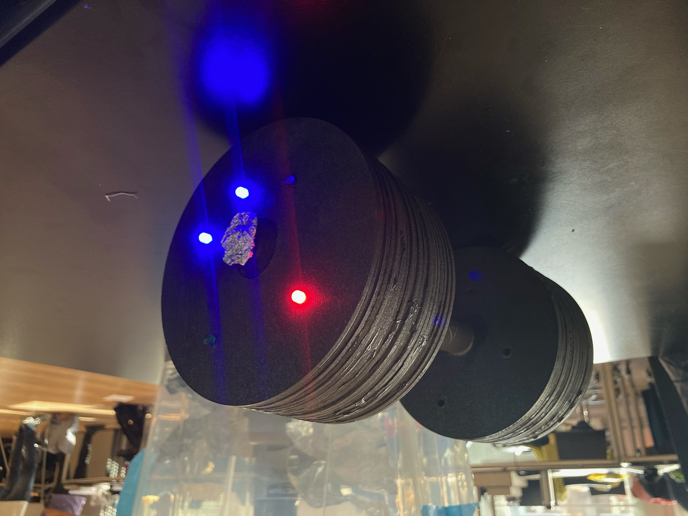

Lifter

Deze helft van de Dom-bell is de lifter helft.
Het is gemaakt voor iemand die graag wilt sporten, voor nu staat het op 3x per week maar je kan zelf instellen hoe vaak je wilt gaan.
Zoals je ziet in de foto staan er 2 blauwe lampjes aan, elk blauwe lampje geeft aan hoe vaak je bent wezen sporten deze week.
Als je aan het einde van de week dus 3 keer hebt gesport dan zijn er 3 blauwe lampjes aan en gaat het groene lampje aan wanneer de tijd op is.
Als je dus minder dan 3 keer bent wezen sporten gaat het rode lampje aan wanneer de tijd op is.
"Guitar Hero"
 Deze helft van de Dom-bell is de "Guitar Hero" helft.
Dit hebben we ontworpen om verveling tegen te gaan. De mensen die guitar hero al kennen zullen wel weten wat voor soort spel een rhythm game is,
maar voor de mensen die daar nog nooit van hebben gehoord; wanneer je het folie in het midden aanraakt zal het spel beginnen,
daarna moet je het stukje folie aanraken van het bijbehorende lichtje dat aangaat.
Deze helft van de Dom-bell is de "Guitar Hero" helft.
Dit hebben we ontworpen om verveling tegen te gaan. De mensen die guitar hero al kennen zullen wel weten wat voor soort spel een rhythm game is,
maar voor de mensen die daar nog nooit van hebben gehoord; wanneer je het folie in het midden aanraakt zal het spel beginnen,
daarna moet je het stukje folie aanraken van het bijbehorende lichtje dat aangaat.
Werking
De Lifter start door de touch sensor in het midden aan te raken. Zodra die wordt aangeraakt start de timer van een week.
Elke keer dat je bent wezen sporten til je de halter op en gaat er een blauw lampje aan totdat je 3 keer bent wezen sporten.
Als je aan het einde van de week minder dan 3 keer hebt gesport dan gaat het rode lampje aan, maar als je aan het einde van de week
3 keer of vaker hebt gesport dan gaat het groene lampje aan.
De "Guitar Hero" werkt door eerst de touch sensor in het midden aan te raken. Zodra je die aanraakt start het spel.
Tijdens het spel gaat er elke keer 1 random lampje aan en dan moet jij als speler de bijbehorende touch sensor aanraken.